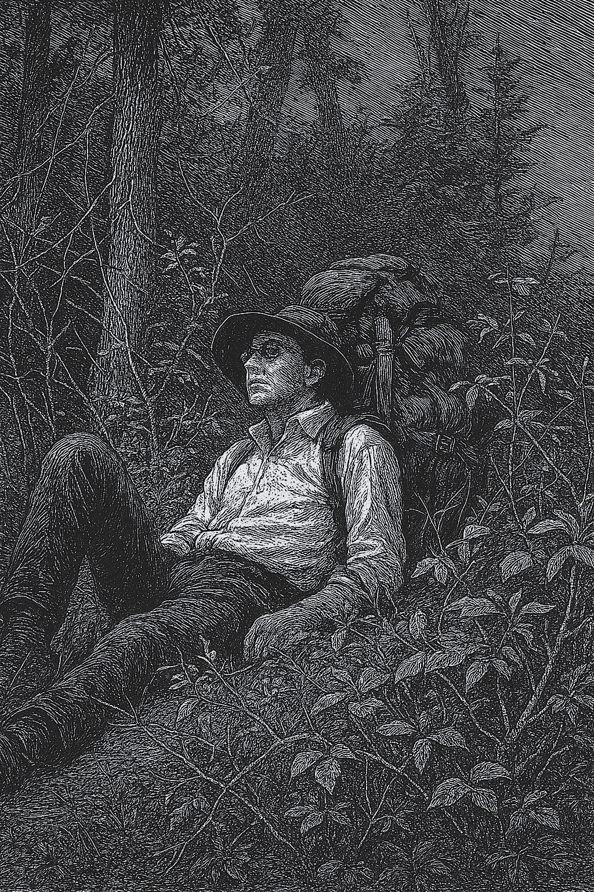
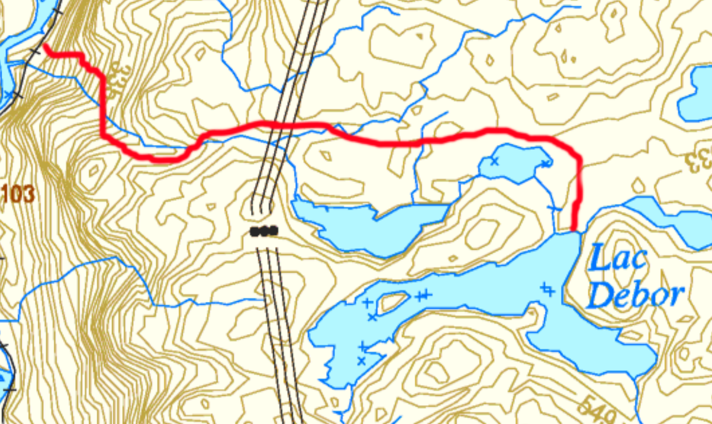

29 mai 2025 - Jour 1
Le train s'est arrete a 10h45 puis a disparu dans les bois. Plus rien. Aucun batiment, aucun panneau, aucune voix. Le silence m'est tombe dessus d'un seul coup, lourd et total. Le vrai debut de l'expedition, c'etait ca: etre laisse la, seul.
Je suis parti vers le lac Debord. L'ascension m'a paru interminable. Chaque pause etait une negociation entre la fatigue et la volonte. Plus tard, une riviere gonflee par la fonte des neiges m'a oblige a detourner. Avec le poids du sac, tout devenait plus couteux.
Vers 16h30, j'ai atteint le lac. Pas un souffle de vent, pas un moustique, juste une lumiere blanche sur l'eau. J'etais a bout. Peut-etre au bord d'un debut d'hyperthermie. Je suis entre dans l'eau glaciale pour revenir a moi, puis j'ai accepte que demain serait un jour de repos.

